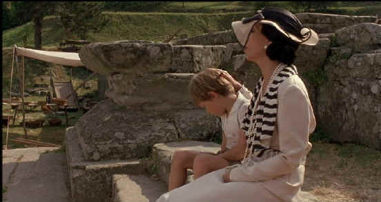

|
Tea With Mussolini/B,B+
|
|
MGM/1999/117m/ANA
1.66
|
A small movie with striking production
values, Tea with Mussolini makes the most of period detail.
Saturated in the radiance of remembrance, the autobiographical
tale of movie director Franco Zeffirelli
is set during the rise of Italian Fascism and culminates
with the departure of the Germans from Italy toward the end of
World War II.
 |
|
Cher
as Elsa remembers Luca. ©MGM |
Tea
with Mussolini is driven by
characters and setting. the film. The ex-patriot ladies of Florence
tolerate the imperious Lady Hester who proudly refers to her late
husband the ambassador at every opportunity. She's accepted, through
protocol, as the social leader of these ladies. Then there's
Arabella and her precious dog and a sensibly cynical outlook on
life, and Georgie, the American woman trying hard at looking like a
man The big event of the title, the tea with Il Dulce, is rather
mundane and brief and almost exists to confirm the title. I would
almost have like the film better if there were a mystery about
whether the tea ever took place. It would have been a layer of
dramatic interest missing..
Cher
gives an excellent flashy performance as Elsa, a wealthy expatriate
American living the high life with such intensity that she lights up
the life of those around her, despite their jealousies. The
performances are beautifully modulated in Tea with Mussolini,
from the dour and forthright Joan Plowright playing Mary to the
eccentric Judi Dench enjoying every moment of Arabella. Maggie Smith
is Lady Hester and Lily Tomlin prances about as Georgie. I like the
youngsters who play Zeffirelli at different ages. They are both
charming and effective and play well against the ladies.
The
photography is gorgeous, the Florence settings ripe with old world
charm, and the music embraces the warm memory of the past. Director Zeffirelli does a nice job of making the pace of the film energetic
fit within the confines of the world of Tea with Mussolini.
The DVD
lives up to the lushness of Tea with Mussolini's photography.
Color saturation is brilliant with a delicate palette realized with
accuracy. Overall, the transfer is quite sharp and the warm lighting
preserves the film's nostalgic mood. Music and ambient details are
recorded with precision on Dolby Digital 5:1 surround.
|
The
Feature
Archive has articles
ranging from John Ford to Screen
Voices, The
Heistmasters, Akira
Kurosawa and Frank
Darabont.

Catch the Hollywood take on Blonde Bimbos by clicking on the
image above.
Check out the Movie
Poster Archive
for short bios and images of Susan Hayward, Kirk Douglas,
Katharine Hepburn and many more. This month's featured star
is Clark
Gable.
Imaging
Science Foundation
The Imaging
Science Foundation promotes proper standards in home theater
viewing. ISF trained technicians offer monitor calibration
services to consumers. The difference in a properly
calibrated monitor can be astounding. Click on the image to find
an ISF member near you.
HOT
LINKS
DVD
Verdict
They
may be judgmental, but that's the point, isn't it. Lots of DVD
reviews plus news and more
The
Home Theater Forum
Looking for
lively and helpful exchanges on home theater, DVD, movies. Visit
this friendly site and get a hardy welcome.
Home Theater
Reference Reviewing System
When you read a DVD review it's of utmost importance to know
what equipment is being used to evaluate quality. Click on the
projectors to find out more.
|